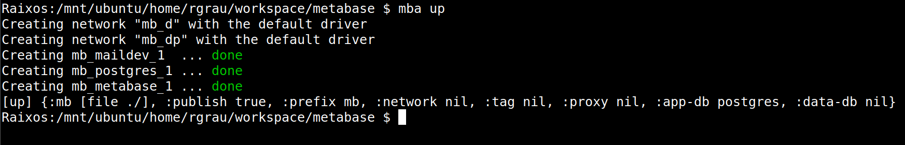
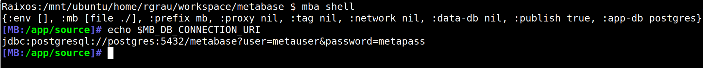

MetaBase Assembler
Raimon Grau
2021-03-11 Thu 00:00
Created: 2021-03-11 Thu 08:48
MBA
- Dockerized development environment
- Starting from .devcontainer/Dockerfile
- Adding databases to the mix with docker compose
- So it's basically a wrapper around our dev dockerfile and docker-compose.
- But it can help with other stuff too (hopefully)
Usage
mba up # starts all containers and connects them
mba shell # opens a shell to the metabase container
mba dbconsle # opens a sql to the app-db container
mba down # tearsdown everything
Containers
mba up

- Metabase
- app-db
- maildev
- data-db?
- proxy?
Shell
mba shell

dbconsole
mba dbconsole


Options
mba --mb X --app-db Y --data-db Z --proxy Q \
--prefix P --network N --publish false \
--env FOO=bar up
# default:
mba --mb ./ --app-db postgres --publish true
Mountpoints
Mounts every container's /root to a single directory on the host
$(pwd):/app/source # only MB container
~/.mba/.mba-home:/root # every container shares this "portal"
Ports
- 3000:3000
- 7888:7888
- 8080:8080
- 8080:80? (proxy)
Isolation
- publishing ports is optional
- you can have multiple metabase instances running at the same time
- allowing to test upgrades.
History and Configs
- configs for better debugging can be injected easily
- postgres pg_stat_statements
- more logs
- /root is shared between all containers.
- .psqlrc/.bashrc
- .bash_history
- pg_dump/pg_restore
repros?
- Running from source for dev
- test in isolation
- Use a published docker image:
mba --mb docker:metabase/metabase-enterprise --app-db postgres
Extra
mba builds docker-compose.ymls on-the-fly and uses docker-compose under the hood, so everything docker-compose still applies
mba --app-db postgres ps
mba --app-db postgres logs
mba --app-db postgres config
extra commands
mba --app-db h2 graph